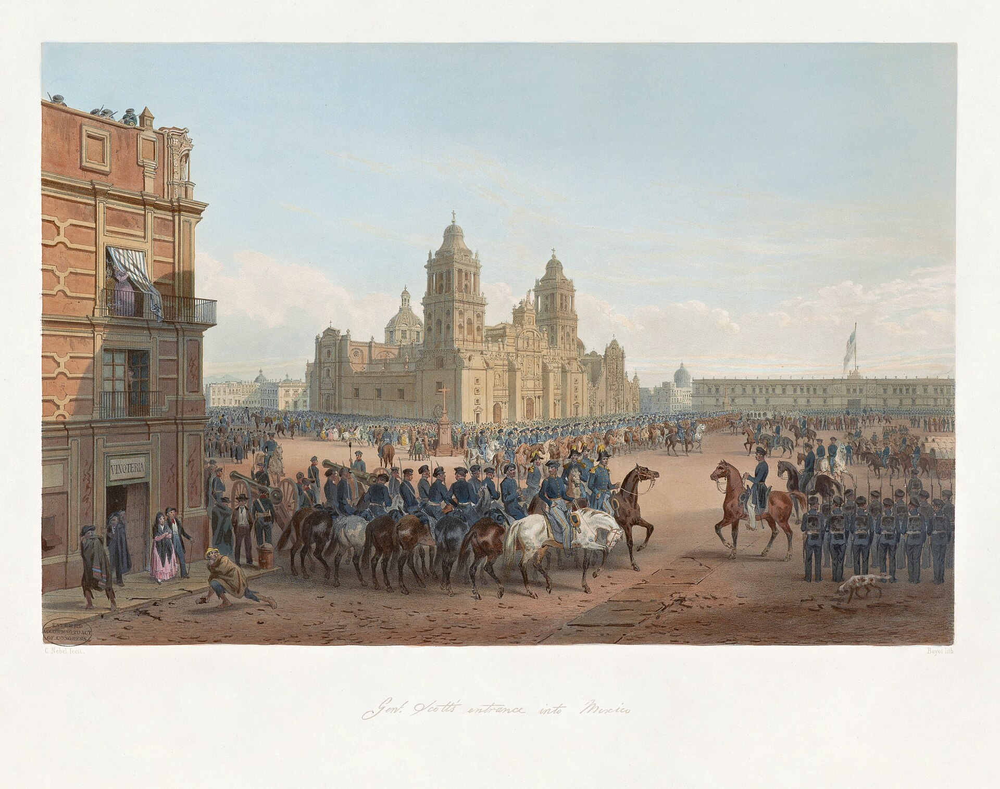

Directions: Work through the five stations in order. Each station holds one record of the expansion of the 1840s: an editorial that named a destiny, a president asking Congress to recognize a war, a congressman demanding a spot on a map, an amendment that would have barred slavery from the winnings, and the treaty that closed the war. At each station, state the version of expansion the record tells. At the end, judge whether Manifest Destiny described what the United States did in the 1840s or disguised it.
Source: Unsigned editorial traditionally attributed to John L. O'Sullivan, "Annexation," July-August 1845 (United States Magazine and Democratic Review, 1845), as carried in the audited TPSP record. Cuts are marked with ellipses, as the record carries them.
"It is now time for the opposition to the Annexation of Texas to cease. [...] Texas is now ours. Already, before these words are written, her Convention has undoubtedly ratified the acceptance, by her Congress, of our proffered invitation into the Union. [...] It is time then that all should cease to treat her as alien. [...]"
"Why, were other reasoning wanting, in favor of now elevating this question of the reception of Texas into the Union, out of the lower region of our past party dissensions, up to its proper level of a high and broad nationality, it surely is to be found, found abundantly, in the manner in which other nations have undertaken to intrude themselves into it, between us and the proper parties to the case, in a spirit of hostile interference against us, for the avowed object of thwarting our policy and hampering our power, limiting our greatness and checking the fulfillment of our manifest destiny to overspread the continent allotted by Providence for the free development of our yearly multiplying millions."
State the editorial's position on Texas in its own terms, naming what Texas already is in its telling and what other nations are accused of doing.
The second passage rests the case on a phrase. State what the phrase claims about the continent, naming who allotted it and whose development it was allotted for, and state one holder of that continent the passage never names.
Source: James K. Polk, Message to Congress, May 11, 1846 (Avalon Project, Yale Law School). Passages are quoted from that transcription. Cuts between passages are shown by the paragraph breaks.
"The Mexican Government not only refused to receive him or listen to his propositions, but after a long-continued series of menaces have at last invaded our territory and shed the blood of our fellow-citizens on our own soil."
"Upon the pretext that Texas, a nation as independent as herself, thought proper to unite its destinies with our own she has affected to believe that we have severed her rightful territory, and in official proclamations and manifestoes has repeatedly threatened to make war upon us for the purpose of reconquering Texas. In the meantime we have tried every effort at reconciliation. The cup of forbearance had been exhausted even before the recent information from the frontier of the Del Norte. But now, after reiterated menaces, Mexico has passed the boundary of the United States, has invaded our territory and shed American blood upon the American soil. She has proclaimed that hostilities have commenced, and that the two nations are now at war."
"As war exists, and, notwithstanding all our efforts to avoid it, exists by the act of Mexico herself, we are called upon by every consideration of duty and patriotism to vindicate with decision the honor, the rights, and the interests of our country."
State the two failures Polk charges against Mexico before the bloodshed, in his order, and state the sentence in which he says what Mexico has now done.
Polk asks Congress to recognize a war rather than to declare one. State the ground he gives for that request, and name the question about the boundary his message does not argue, the question of where the soil in dispute lay between the Nueces and the Rio Grande.
Source: Abraham Lincoln, "Spot" Resolutions in the United States House of Representatives, December 22, 1847 (Papers of Abraham Lincoln, document D200434b, transcription of Lincoln's handwritten resolutions). Spelling is as that transcription carries it, including teritories and teritory. Three of the eight resolutions are printed here.
"And whereas this House desires to obtain a full knowledge of all the facts which go to establish whether the particular spot of soil on which the blood of our citizens was so shed was, or was not, our own soil, at that time; therefore"
"First: Whether the spot of soil on which the blood of our citizens was shed, as in his messages declared, was, or was not, within the teritories of Spain, at least from the treaty of 1819 until the Mexican revolution"
"Second: Whether that spot is, or is not, within the teritory which was wrested from Spain, by the Mexican revolution"
"Seventh: Whether our citizens, whose blood was shed, as in his messages declared, were, or were not, at that time, armed officers, and soldiers, sent into that settlement, by the military order of the President through the Secretary of War"
State the single fact the House says it desires to know, in the words of the opening passage, and explain why the first two resolutions test that fact against Spain and against Mexico in turn.
The seventh resolution changes the subject from soil to men. State what it asks about the citizens whose blood was shed, and state what answer to it would do to Polk's account of an invasion.
Source: David Wilmot, amendment offered in the House of Representatives, August 8, 1846, as printed in the Congressional Globe, 29th Congress, 1st session, page 1217 (transcription consulted at Encyclopedia.com, which cites that Globe printing). The proviso is one sentence.
"Provided, That, as an express and fundamental condition to the acquisition of any territory from the Republic of Mexico by the United States, by virtue of any treaty which may be negotiated between them, and to the use by the Executive of the moneys herein appropriated, neither slavery nor involuntary servitude shall ever exist in any part of said territory, except for crime, whereof the party shall first be duly convicted."
The proviso passed the House in 1846 and again in later sessions, each time on votes that divided by section. The Senate never passed it, and it never became law.
State the condition the proviso sets, naming what it attaches to, the two forms of labor it bars, and the single exception it allows.
The proviso was offered while the war at Station 2 was still being fought. State why its timing gave it force, and state what its record in the two houses shows about the country that was winning the war.
Source: United States and Mexico, Treaty of Guadalupe Hidalgo, 1848 (Yale Avalon Project), as carried in the audited TPSP record. The record carries Article I and Article VIII. Cuts are marked with ellipses, as the record carries them.

"ARTICLE I
There shall be firm and universal peace between the United States of America and the Mexican Republic, and between their respective countries, territories, cities, towns, and people, without exception of places or persons."
"[...]"
"ARTICLE VIII
Mexicans now established in territories previously belonging to Mexico, and which remain for the future within the limits of the United States, as defined by the present treaty, shall be free to continue where they now reside, or to remove at any time to the Mexican Republic, retaining the property which they possess in the said territories, or disposing thereof, and removing the proceeds wherever they please, without their being subjected, on this account, to any contribution, tax, or charge whatever. Those who shall prefer to remain in the said territories may either retain the title and rights of Mexican citizens, or acquire those of citizens of the United States. But they shall be under the obligation to make their election within one year from the date of the exchange of ratifications of this treaty; and those who shall remain in the said territories after the expiration of that year, without having declared their intention to retain the character of Mexicans, shall be considered to have elected to become citizens of the United States."
"In the said territories, property of every kind, now belonging to Mexicans not established there, shall be inviolably respected. The present owners, the heirs of these, and all Mexicans who may hereafter acquire said property by contract, shall enjoy with respect to it guarantees equally ample as if the same belonged to citizens of the United States."
State the choice Article VIII gives Mexicans living in the ceded territories, naming both citizenship options, the deadline for choosing, and what silence after the deadline counts as.
Set Article VIII beside Station 1. O'Sullivan wrote of a continent allotted for the free development of a multiplying people. State what the treaty text shows about the people already living on part of that continent, and name the promise the treaty makes about their property.
For each record, state the version of expansion it tells, in one sentence grounded in the station.
| Station | The version it tells | What its version leaves out |
|---|---|---|
| Station 1: Annexation editorial | ||
| Station 2: Polk's war message | ||
| Station 3: Spot resolutions | ||
| Station 4: Wilmot Proviso | ||
| Station 5: Treaty of Guadalupe Hidalgo |
Close the file with a verdict. Did Manifest Destiny describe what the United States did in the 1840s, or did it disguise what the United States did? Defend your verdict from the records in this file, using at least two stations, and answer the strongest claim the other side of your verdict can make from this file.
State the position on Texas, and the charge against other nations. The editorial holds that opposition to annexation should cease, that Texas is now ours, that her convention has ratified acceptance of the invitation into the Union, and that Texas should no longer be treated as alien. Other nations are accused of hostile interference aimed at thwarting American policy and limiting its greatness.
State the phrase claim, and one holder it never names. The phrase claims a manifest destiny to overspread the continent allotted by Providence for the free development of the nation's yearly multiplying millions. The continent was allotted, in the telling, by Providence, and allotted for the American people named as our yearly multiplying millions. Holders the passage never names include the Mexican republic, whose Texas the editorial treats as already American, and the Native nations whose country the continent contained. Credit either, stated from the record.
State the two failures, and the sentence on what Mexico has done. Polk charges first that Mexico refused to receive the American envoy or listen to his propositions, and second that she repeatedly threatened war to reconquer Texas in proclamations and manifestoes. The sentence on the bloodshed reads that Mexico has passed the boundary of the United States, has invaded our territory and shed American blood upon the American soil, and has proclaimed that hostilities have commenced.
State the ground for recognition, and the unargued question. The ground is that war already exists, and exists by the act of Mexico herself, so Congress is asked to recognize an existing war and place the means of prosecuting it at the president's disposal. The message asserts the boundary rather than arguing it: it does not establish that the ground between the Nueces and the Rio Grande was American soil rather than Mexican or disputed soil, the point Lincoln presses at Station 3.
State the fact desired, and the work of the first two resolutions. The House desires a full knowledge of all the facts which go to establish whether the particular spot of soil on which the blood of citizens was shed was, or was not, American soil at that time. The first resolution tests the spot against Spanish title from the treaty of 1819 to the Mexican revolution, and the second against the territory Mexico wrested from Spain, so the spot's Spanish and Mexican history decides the claim.
State the seventh resolution question, and its effect. The seventh asks whether the citizens whose blood was shed were armed officers and soldiers sent into that settlement by the military order of the president through the secretary of war. An affirmative answer turns the bloodshed from an invasion into a clash produced by an American armed force ordered into that settlement, weakening Polk's account at its foundation.
State the condition, its object, the bars, and the exception. As an express and fundamental condition to the acquisition of any territory from Mexico by treaty, and to the use of the moneys appropriated, neither slavery nor involuntary servitude shall ever exist in any part of that territory. The single exception is for crime, whereof the party shall first be duly convicted. The language is modeled on the Northwest Ordinance of 1787.
State the force of the timing, and the lesson of the two houses. While the war was still being fought and before any cession existed, the proviso forced Congress to answer, in advance, what the winnings were for. Its record shows a country united enough to win a war and divided by section over its fruits: the House, apportioned by population, passed it repeatedly, and the Senate, where the sections stood equal, blocked it every time, so it never became law.
State the choice, the deadline, and the effect of silence. Mexicans established in the ceded territories may continue where they reside or remove to the Mexican Republic, keeping or selling their property without tax or charge. Those who remain may retain Mexican citizenship or acquire citizenship of the United States. They must make their election within one year from the exchange of ratifications, and those who remain after that year without declaring an intention to retain Mexican character are considered to have elected to become citizens of the United States.
Set the article beside the editorial. The treaty text shows the ceded country already inhabited by Mexican citizens, living on property the treaty promises will be inviolably respected, with guarantees equally ample as if the property belonged to citizens of the United States, for owners present and for owners not established there alike. Against O'Sullivan's telling, the continent was not empty ground awaiting a multiplying people. It held people whose citizenship the treaty had to assign and whose property it had to promise to respect.
Station 1 tells expansion as destiny fulfilled, Texas already ours and foreign objection as interference, and leaves out Mexican title and Native country. Station 2 tells expansion as defense, a patient republic driven to recognize a war Mexico began, and leaves out the disputed boundary and the troops ordered into the disputed ground. Station 3 tells expansion as an unproved presidential claim, a war resting on a spot no one had located in law, and leaves out any positive account of what the boundary should have been. Station 4 tells expansion as a question about slavery's future, asked before the land was won, and leaves out the war's conduct entirely. Station 5 tells expansion as a legal settlement between nations, peace declared and a resident population assigned a choice of citizenship and a promise on property, and leaves out the coercion that the defeat behind the treaty supplied. Closing verdicts earn full credit when argued from at least two stations and answered against the other side. A describe verdict rests on the reach the phrase named in advance, annexation in 1845, Oregon divided in 1846, and half of Mexico ceded in 1848, a continent overspread within three years. A disguise verdict rests on what the phrase and the war message could not say, that the continent was held by Mexico and by Native nations, that the bloodshed spot was disputed ground, and that slavery's extension was the question the winnings forced. A verdict that uses one station only earns partial credit.